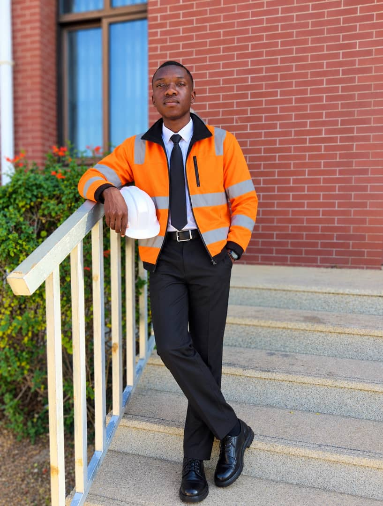
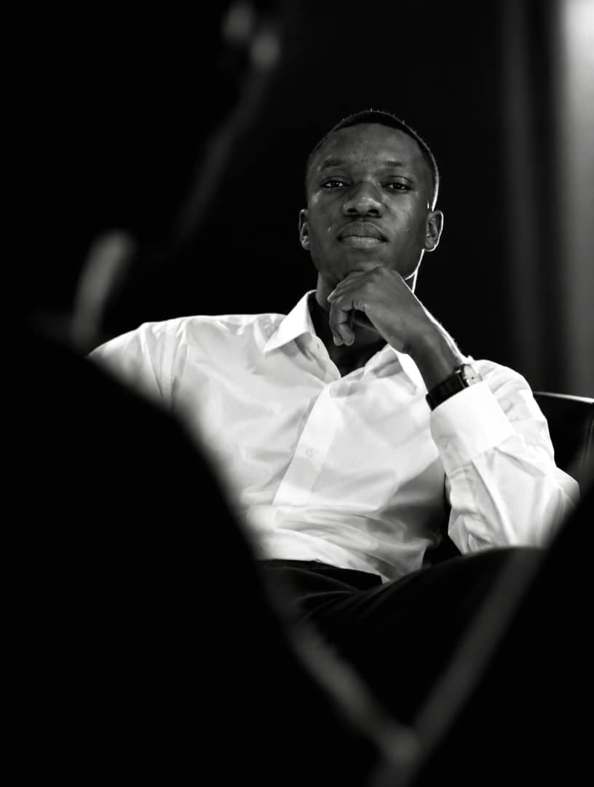
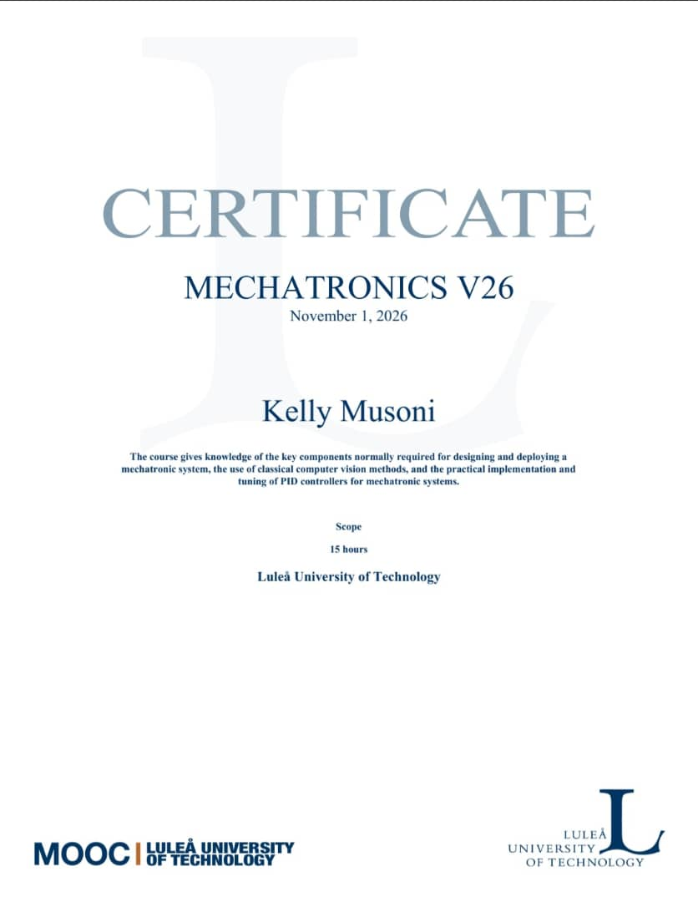
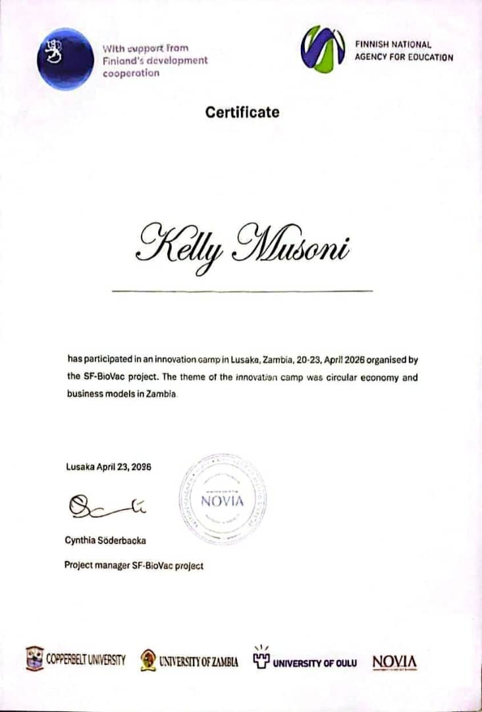
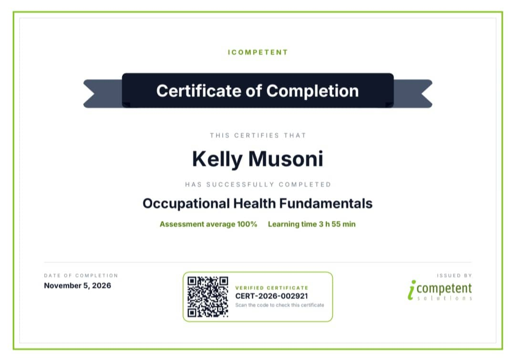
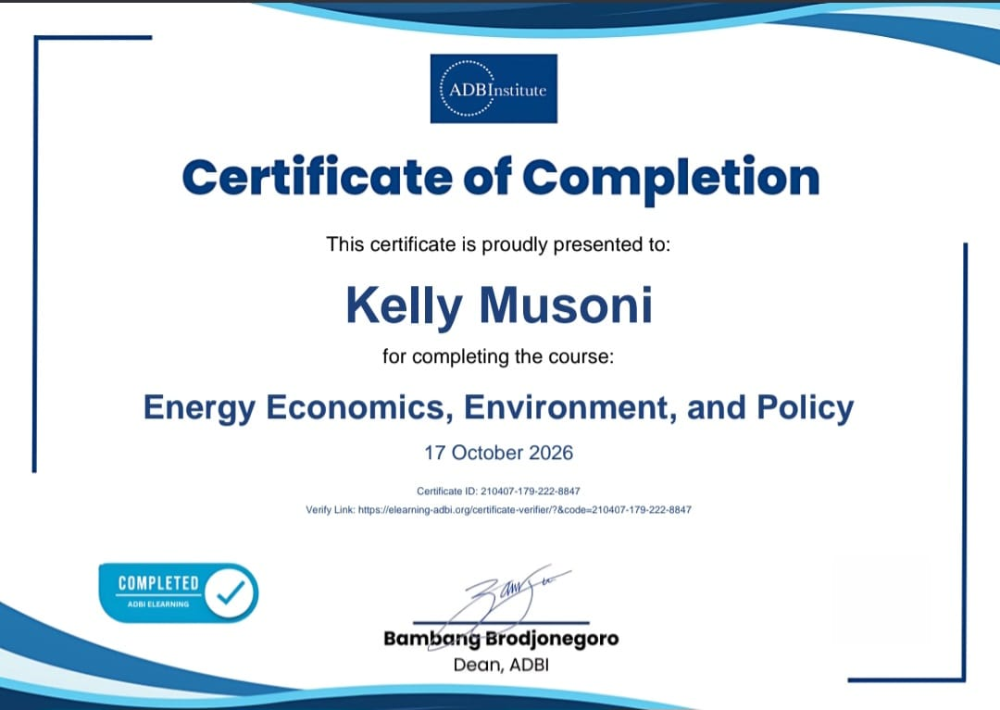
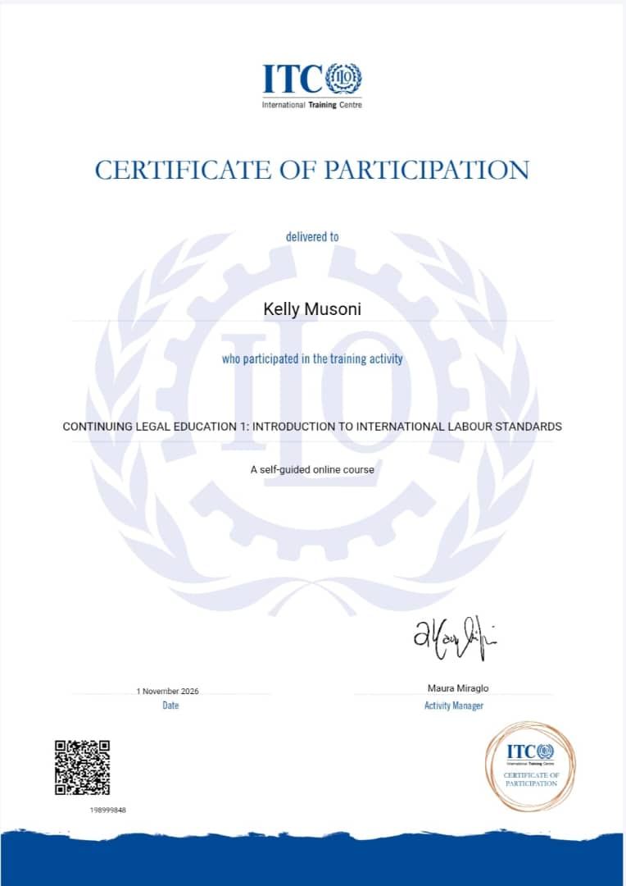
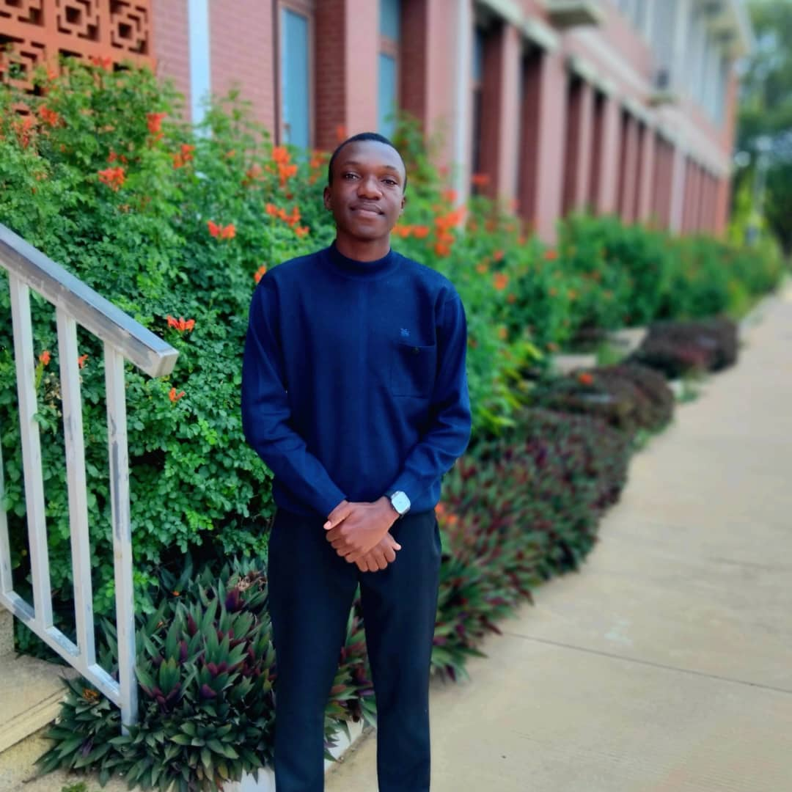

Kelly K Musoni.
Mining Engineering Student | University of Zambia
A Zambian student with interests in engineering, technology, innovation, entrepreneurship and sustainable development.
His journey reflects a commitment to academic development, leadership, continuous learning and exploring ideas that connect knowledge with practical solutions.
Discover His Journey
Who Is Kelly K Musoni?
Kelly K Musoni is a Zambian Mining Engineering student at the University of Zambia whose interests extend beyond the traditional boundaries of engineering. Born in 2007 and originally from Kalulushi, Zambia, his journey reflects an appreciation for education, independent learning, leadership and the exploration of new opportunities.
He is currently pursuing a Bachelor of Engineering in Mining Engineering, a discipline that provides him with an opportunity to understand the science, technology and engineering systems involved in mineral resource development.
However, his interests are not confined to mining alone. He has developed an interest in artificial intelligence, digital transformation, entrepreneurship, mechatronics, energy economics and sustainable development. These interests reflect his curiosity about how different disciplines can complement one another in addressing real-world challenges.
His academic journey is complemented by experiences in employment, tutoring, student leadership, community involvement, innovation programmes and professional development. Through these activities, he continues to explore different working environments and expand his understanding of both technical and interpersonal skills.
Kelly believes that education extends beyond the classroom. He values the knowledge acquired through formal studies as well as the lessons obtained from experience, collaboration, responsibility and exposure to different ideas.
Background
Kelly's background is rooted in Kalulushi, a town in Zambia's Copperbelt Province. His early educational experiences provided the foundation upon which his later academic interests, leadership activities and professional ambitions developed.
Growing up and pursuing his education in Zambia exposed him to different learning environments and opportunities for personal development. During his school years, he became involved in academic and extracurricular activities, particularly those promoting science, technology, creativity and student participation.
His involvement in leadership positions and school organisations helped him appreciate the importance of taking responsibility, working with others and contributing to collective activities.
These early experiences contributed to his decision to pursue an engineering-related career and continue exploring opportunities that extend beyond formal academic education.
Educational Background
Kelly's educational journey reflects a progression from primary and secondary education to university-level engineering studies. His academic development has provided the foundation for his interests in science, technology and professional advancement.
Kalulushi Primary School
2013 – 2019
Kelly attended Kalulushi Primary School, completing his primary education in 2019. During this stage, he served as a Grade 7 class monitor, an early experience in student responsibility and leadership.
Chavuma Secondary School
2020 – 2024
He proceeded to Chavuma Secondary School, where he completed his secondary education in 2024, obtaining a Grade 12 School Certificate with six points and a GPA of 3.95.
His secondary school experience extended beyond classroom learning. He participated in science and innovation activities, joined student organisations and undertook leadership responsibilities.
He served as a Grade 9 class monitor and school prefect, while also participating in the Junior Engineers, Technicians and Scientists (JETS) Club and the Business Club.
These experiences contributed to his academic development and encouraged an interest in practical problem-solving, leadership and engineering-related disciplines.
University of Zambia
Bachelor of Engineering in Mining Engineering
Kelly is currently pursuing Mining Engineering at the University of Zambia, within the School of Mines.
His studies expose him to the engineering principles, scientific concepts and technical knowledge relevant to mineral exploration, extraction and the wider mining industry.
Alongside his formal studies, he continues exploring additional areas of knowledge, particularly technology, engineering innovation, environmental sustainability and the changing demands of the modern mining sector.
Work & Practical Experience
Kelly's development has also involved exposure to practical working environments. These experiences have allowed him to apply responsibility, communication and problem-solving outside the academic setting.
Cashier – Grocery Retail
2025 | Approximately Eight Months
In 2025, Kelly worked as a cashier at a grocery retail business for approximately eight months. The role introduced him to the practical operations of a retail environment, including customer service, transaction handling and maintaining accuracy when dealing with payments.
The experience also provided exposure to everyday business operations, customer relations, accountability and the importance of maintaining professionalism in the workplace.
Academic Tutoring
Educational Support
Kelly has also participated in academic tutoring, particularly in Mathematics, Chemistry and Physics. Through this activity, he has supported other learners in understanding scientific and mathematical concepts.
Tutoring has provided an opportunity to practise communication, patience and the ability to explain technical ideas in an understandable manner.
Leadership & Community Involvement
Leadership has been a recurring part of Kelly's educational and personal development. Through student organisations, school responsibilities and community activities, he has gained experience in working with others, contributing to projects and participating in organised initiatives.
JETS Club – President
2024
Kelly served as President of the Junior Engineers, Technicians and Scientists (JETS) Club in 2024. His involvement in the organisation reflected his interest in science, engineering, technology and student-led innovation.
JETS Club – Vice Project Manager
2020
Earlier in his involvement with JETS, he served as Vice Project Manager, gaining exposure to project organisation, teamwork and collaborative activities.
Environmental Participation
Kelly has participated in environmental awareness activities, including Keep Zambia Clean initiatives and environmental ambassador activities associated with Kalulushi Municipal Council.
These activities reflect an interest in environmental responsibility and community participation.
Youth & Community Engagement
His activities have also included church youth leadership and participation in community-oriented initiatives, contributing to his understanding of teamwork, service and responsibility.
Projects, Technology & Innovation
Beyond his academic studies, Kelly maintains an interest in ideas and initiatives that explore how technology, engineering and creative thinking can be applied to practical challenges.
SF-BioVac Innovation Camp
20–23 April 2026 | Lusaka, Zambia
Kelly participated in the SF-BioVac Innovation Camp, an initiative focused on circular economy and business models in Zambia.
The programme exposed participants to concepts relating to resource efficiency, sustainable business models and the opportunities associated with circular economic approaches.
The initiative involved academic and project partners from Zambia and Finland, including the University of Zambia, Copperbelt University, the University of Oulu and Novia University of Applied Sciences.
KAlix AI – Artificial Intelligence Concept
Kelly has an interest in artificial intelligence and its potential to improve access to information, learning and communication.
One of his areas of exploration is KAlix AI, a concept centred on an accessible artificial intelligence assistant with an emphasis on local language interaction and educational support.
The concept reflects his interest in exploring how emerging technologies can be adapted to address communication and learning needs within the Zambian context.
Artificial Intelligence Engagement – U.S. Embassy Lusaka
Kelly has also participated in an AI-related screening and documentation activity at the United States Embassy in Lusaka, Zambia. This experience forms part of his broader exposure to technology-related initiatives and professional engagement.
Certifications & Professional Development
Kelly recognises that professional development involves continuous learning beyond a person's primary academic discipline. His additional courses and programmes have allowed him to explore subjects across engineering, economics, environmental policy and international standards.
SF-BioVac Innovation Camp
23 April 2026
Certificate of Participation. The programme explored circular economy principles and business models in Zambia.
Energy Economics, Environment, and Policy
17 October 2026 | Asian Development Bank Institute
Successfully completed a course examining the relationship between energy economics, environmental considerations and public policy.
Mechatronics V26
1 November 2026 | Luleå University of Technology
Completed a 15-hour course covering the key components of mechatronic systems, classical computer vision methods and the practical implementation and tuning of PID controllers.
Continuing Legal Education 1
1 November 2026 | ITC / International Labour Organization
Completed a self-guided online introduction to International Labour Standards through the International Training Centre of the International Labour Organization.
Academic & Other Achievements
Academic Performance – Chavuma Secondary School
2024
Obtained a Grade 12 School Certificate with six points and a GPA of 3.95 upon completion of secondary education.
District Senior JETS Project Competition
2024
Participated in a district senior JETS project competition, where his team's project received third-place recognition.
SOSTAZ Religious Education Quiz
2023
Achieved first place in the second round of the Religious Education quiz.
International Physics & Chemistry Competitions
Kelly has also explored international academic competitions in Physics and Chemistry, extending his academic interests beyond the conventional classroom environment.
What He Has Learned
Kelly's experiences across education, employment, leadership and professional development have introduced him to different forms of knowledge and practical responsibility.
His academic studies have provided a foundation in scientific and engineering principles, while his additional courses have expanded his exposure to energy economics, environmental policy, mechatronics, computer vision, control systems and international labour standards.
His employment and tutoring experiences have also strengthened his appreciation for effective communication, accuracy, customer relations, teamwork and explaining complex ideas.
Through leadership and innovation programmes, he has gained experience in collaboration, project participation, organisation and exploring solutions to practical problems.
Collectively, these experiences have contributed to his understanding that professional growth requires adaptability, discipline and a willingness to learn continuously.
What He Is Doing Now
Kelly is currently pursuing Mining Engineering at the University of Zambia while continuing to expand his knowledge through independent learning and additional professional development.
His current interests include understanding the technological developments transforming the mining industry, exploring artificial intelligence and developing knowledge in different engineering disciplines.
He is also interested in gaining further practical exposure through professional environments, technical projects and opportunities that connect academic knowledge with real-world applications.
His present journey is characterised by continued academic development, exploration and preparation for future professional opportunities.
Interests & Fields of Exploration
Kelly's interests reflect a multidisciplinary outlook, combining his main academic discipline with areas of technology, innovation, business and sustainability.
Vision & Future Aspirations
Kelly aspires to build a professional career grounded in engineering knowledge, practical experience and technological understanding.
He is particularly interested in contributing to the advancement of the mining industry while remaining open to opportunities in technology, entrepreneurship and sustainable development.
His long-term ambitions include developing the technical competence and professional experience needed to participate meaningfully in complex engineering and technological projects.
Ultimately, his vision is to use the knowledge and experiences gained throughout his journey to contribute positively to society, create opportunities and participate in work that produces meaningful results.
Gallery
A visual record of Kelly's educational journey, professional experiences, projects, events and activities will be presented in this section.








Contact Kelly
Kelly welcomes appropriate academic, professional, networking and collaborative enquiries.
Email: kalikekakelly@gmail.com